3-12-磁盘管理二
Linux磁盘分区实战
硬盘接口类型
sata
目前常见的接口方面又分为SATA、SAS、MSATA、M.2。
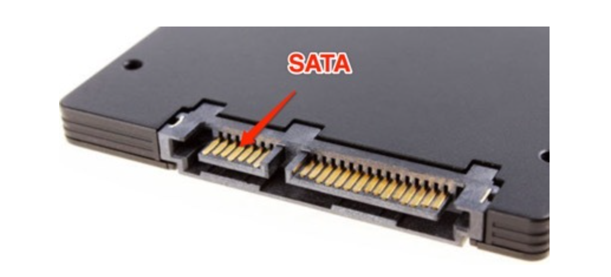
sata是用在个人PC上最为主流的硬盘接口，主要是机械硬盘，廉价，大容量。
sas
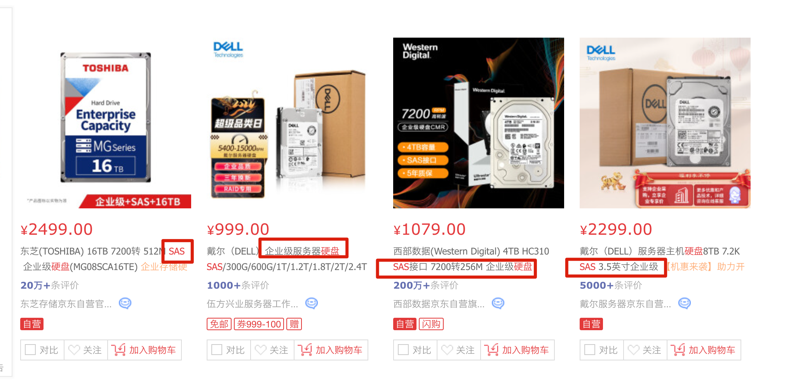
sas接口为企业级专业硬盘使用接口，满足高性能、高可靠性。
以前还有SCSI接口，已经被sas接口取代了。
关于硬盘的历史，主要是如下升级
个人主机
- IDE（Integrated Drive Electronics）传统级硬盘接口、
- 被SATA取代
- IDE（Integrated Drive Electronics）传统级硬盘接口、
企业服务器
- SCSI（Small Computer System Interface），小型计算机系统专用接口
- 被SAS（Serial Attached SCSI）取代
- SCSI（Small Computer System Interface），小型计算机系统专用接口
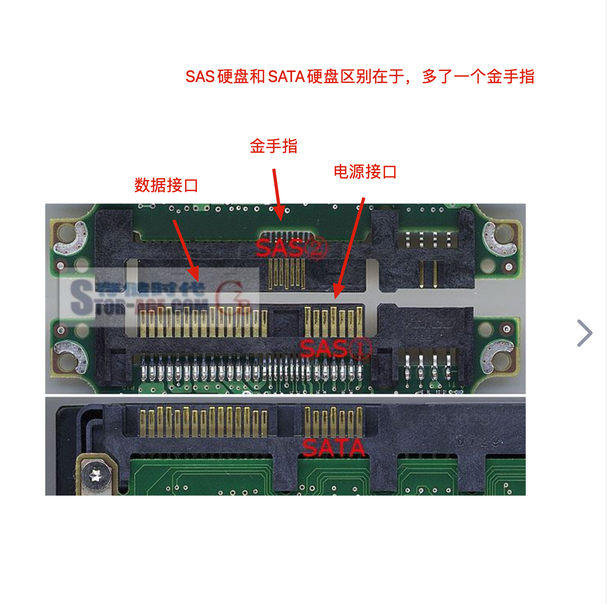
机械硬盘、固态硬盘特点
机械硬盘、怕摔、怕震动
固态硬盘、怕突然断电
硬盘命名规则
不同硬盘（不同接口）插入到系统中，有不同的名字
| OS | IDE(并口) | SATA(串口) | SCSI |
|---|---|---|---|
| RHEL5 | /dev/hda | /dev/sda | /dev/sda |
| RHEL6 | /dev/sda | /dev/sda | /dev/sda |
| RHEL7 | /dev/sda | /dev/sda | /dev/sda |
多块硬盘的名字
https://www.debian.org/releases/sarge/i386/apbs04.html.zh_TW
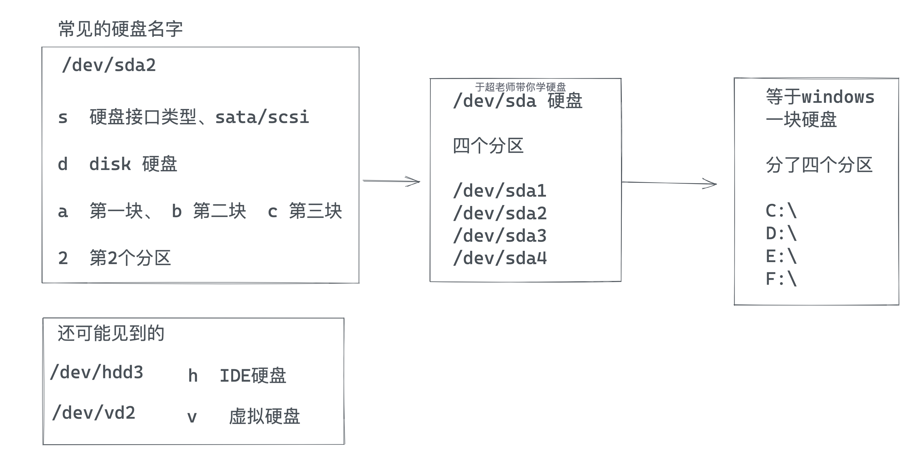
还有就是惠普服务器的硬盘
/dev/cciss/c0d0
/dev/cciss/c0d0p1 c0第一个控制器, d0第一块磁盘, p1分区1
/dev/cciss/c0d0p2 c0第一个控制器, d0第一块磁盘, p2分区2
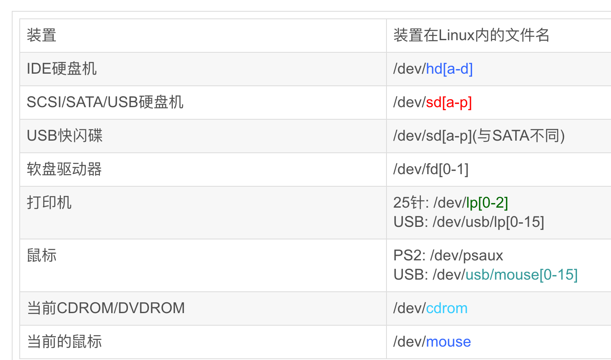
提问关于分区名
1.centos上看到的如下文件名字，表示什么？（Linux一切接文件，磁盘在系统中，也以文件形式展示）
/dev/sda1
/dev/sda2
/dev/sda3
/dev/sda4
/dev/sda5
2.解读下，如下命令是什么
[root@lamp-241 ~]# ls /dev/sd*
/dev/sda /dev/sda1 /dev/sda2
磁盘分区
MBR分区特点
不支持2T以上硬盘
最多支持4个主分区
fdisk命令只能创建MBR分区
磁盘分区步骤
1.执行fdisk /dev/sdb命令，给硬盘创建分区/dev/sdb1、/dev/sdb2、
2.刷新分区表
3.格式化分区文件系统、mkfs.ext4 /dev/sdb1
4.挂载使用该分区，mount
5.开机自动挂载、autofs自动挂载
磁盘分区结构（重要）
主分区
- 一个硬盘的主分区也就是包含操作系统启动所必需的文件和数据的硬盘分区，要在硬盘上安装操作系统，则该硬盘必须得有一个主分区。
- 主分区，也称为主磁盘分区，和扩展分区、逻辑分区一样，是一种分区类型。
- 主分区中不能再划分其他类型的分区
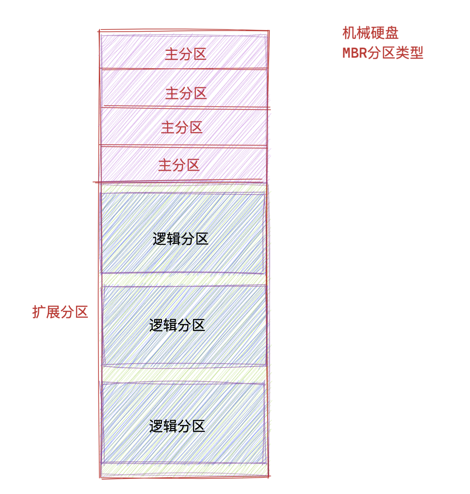
扩展分区/逻辑分区
扩展分区也就是除主分区外的分区，但它不能直接使用，必须再将它划分为若干个逻辑分区才行。
逻辑分区也就是我们平常在操作系统中所看到的D、E、F等盘。
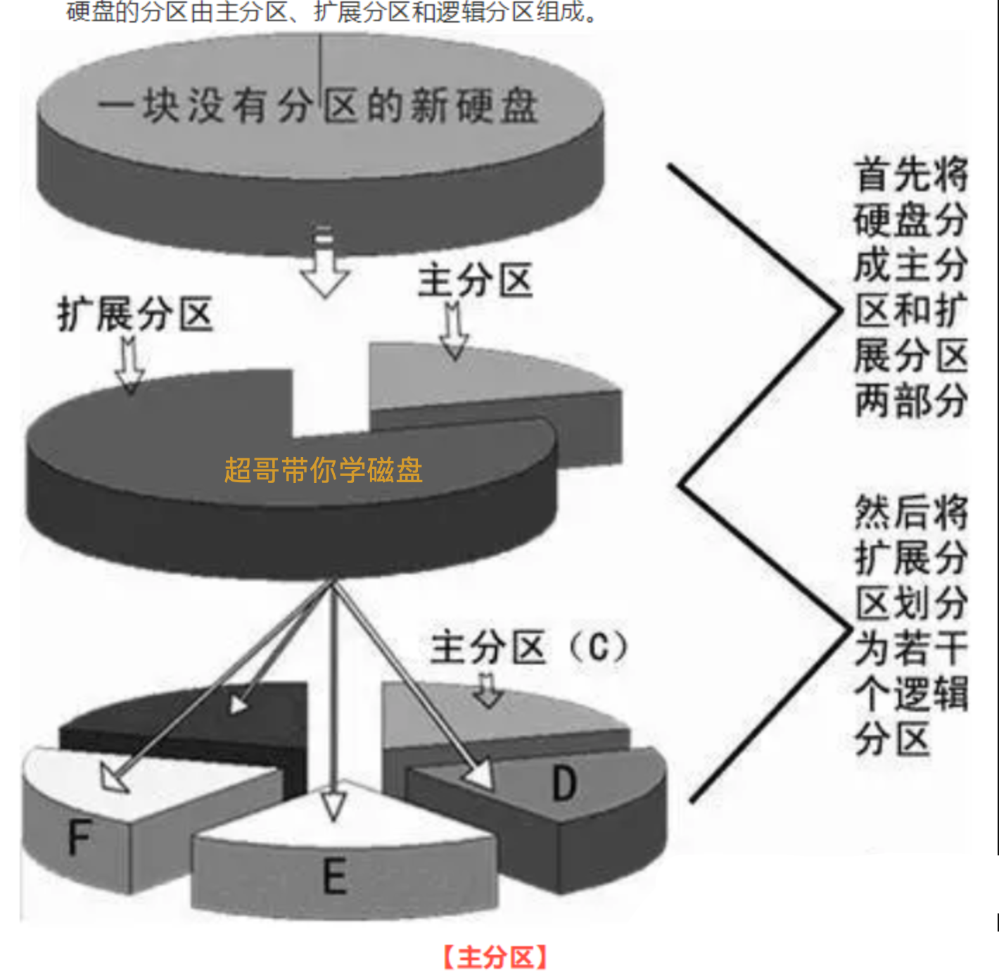
- 主分区，primary partition
- 扩展分区，extended
- 逻辑分区
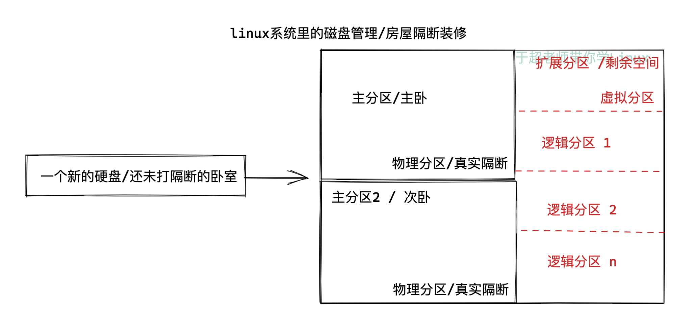
系统默认分区1~4留给了主分区和扩展分区
- 主分区1 * (星号代表是引导分区，引导分区装在这里)
- 主分区2
- 主分区3
- 主分区4(extended)
- 逻辑分区n
分区须知（记忆）
- 最多只能分4个主分区，主分区编号1-4
- 逻辑分区大小总和不能超过扩展分区大小，逻辑分区分区编号从5开始
- 如果删除扩展分区，下面的逻辑卷分区也被删除
- 扩展分区的分区编号（1-4）
关于fdisk命令
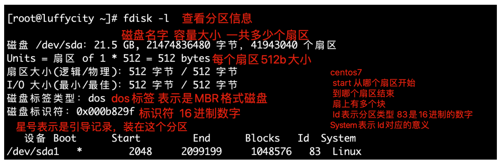
[root@lamp-241 ~]# fdisk -l
Disk /dev/sda: 21.5 GB, 21474836480 bytes, 41943040 sectors
Units = sectors of 1 * 512 = 512 bytes
Sector size (logical/physical): 512 bytes / 512 bytes
I/O size (minimum/optimal): 512 bytes / 512 bytes
Disk label type: dos
Disk identifier: 0x0001d899
Device Boot Start End Blocks Id System
/dev/sda1 * 2048 2099199 1048576 83 Linux
/dev/sda2 2099200 41943039 19921920 8e Linux LVM
fdisk命令
使用fdisk分区
添加新硬盘
vmware添加硬盘
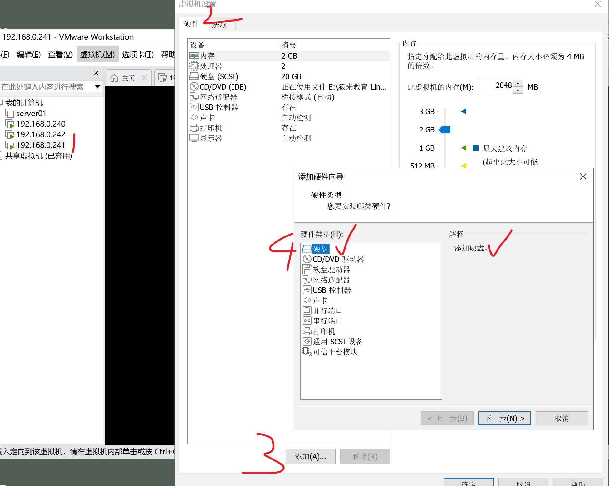
继续添加
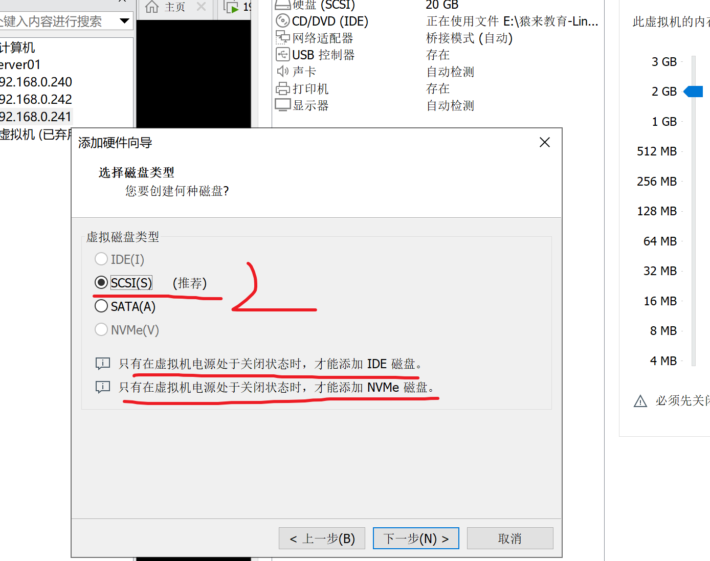
添加完毕
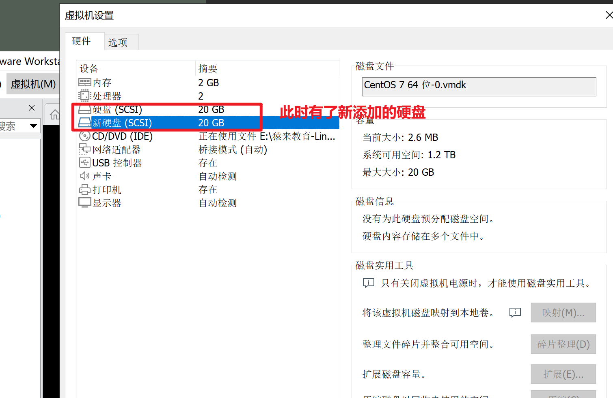
重启linux虚拟机，必须！
查看新添加的硬盘（查看磁盘信息）
lsblk命令
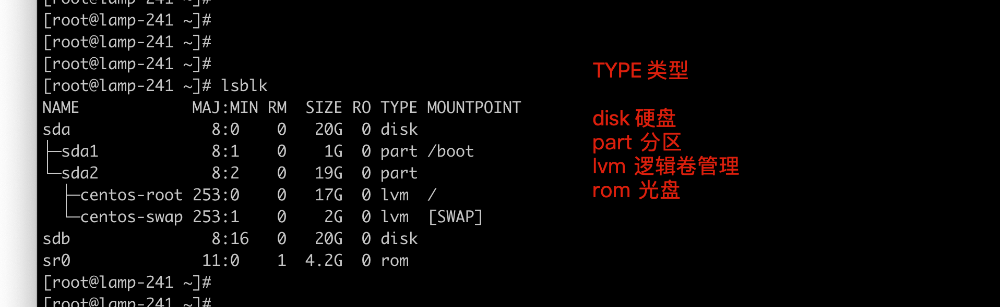
[root@lamp-241 ~]# ls -l /dev/sd*
brw-rw---- 1 root disk 8, 0 Mar 2 01:16 /dev/sda
brw-rw---- 1 root disk 8, 1 Mar 2 01:16 /dev/sda1
brw-rw---- 1 root disk 8, 2 Mar 2 01:16 /dev/sda2
brw-rw---- 1 root disk 8, 16 Mar 2 01:16 /dev/sdb
df命令
[root@lamp-241 ~]# df -h
Filesystem Size Used Avail Use% Mounted on
/dev/mapper/centos-root 17G 6.1G 11G 36% /
devtmpfs 899M 0 899M 0% /dev
tmpfs 911M 0 911M 0% /dev/shm
tmpfs 911M 9.6M 902M 2% /run
tmpfs 911M 0 911M 0% /sys/fs/cgroup
/dev/sda1 1014M 142M 873M 14% /boot
tmpfs 183M 0 183M 0% /run/user/0
显示信息文件系统列下面带tmpfs字样的是虚拟内存文件系统(此处不做展开)。
文件系统/dev/mapper/centos-root的挂载点是/(根目录)，即通常所说的根分区(或根文件系统)；
并且/dev/mapper是linux内核2.6中提供的一个从逻辑设备到物理设备的映射机制，简单说这就是如果你用了lvm，就会看到根目录是这个文件系统，因为它不是一个单纯的物理设备，而是一个虚拟机的逻辑卷组。
/dev/sda1(boot分区)中保存了内核映像和一些启动时需要的辅助文件；
还有一个特殊的分区，swap分区，swap分区是一块特殊的硬盘空间，当实际内存不够用的时候，操作系统会从内存中取出一部分暂时不用的数据，放在交换内存中，从而使当前的程序腾出更多的内存量。
但是由于其性能很差，生产环境是直接禁用的。
fdisk命令参数解释
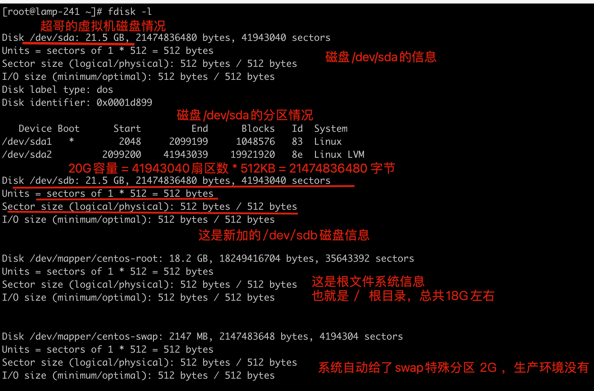
操作sdb硬盘
[root@lamp-241 ~]# fdisk /dev/sdb
Welcome to fdisk (util-linux 2.23.2).
Changes will remain in memory only, until you decide to write them.
Be careful before using the write command.
Device does not contain a recognized partition table
Building a new DOS disklabel with disk identifier 0xf0f33bf9.
Command(m for help): m 输出帮助信息
Commandaction
a toggle a bootable flag 设置启动分区
b edit bsd disklabel 编辑分区标签
c toggle the dos compatibility flag
d delete a partition 删除一个分区
l list known partition types 列出分区类型
m print this menu 帮助
n add a new partition 建立一个新的分区
o create a new empty DOS partition table 创建一个新的空白DOS分区表
p print the partition table 打印分区表
q quit without saving changes 退出不保存设置
s createa new empty Sun disklabel 创建一个新的空的SUN标示
t changea partition's system id 改变分区的类型
u changedisplay/entry units 改变显示的单位
v verifythe partition table 检查验证分区表
w write table to disk and exit 保存分区表
任务：操作sdb硬盘（mbr分区）
任务：将sdb硬盘分区
- 1个主分区
- 1个扩展分区
- 2个逻辑分区
要求图解
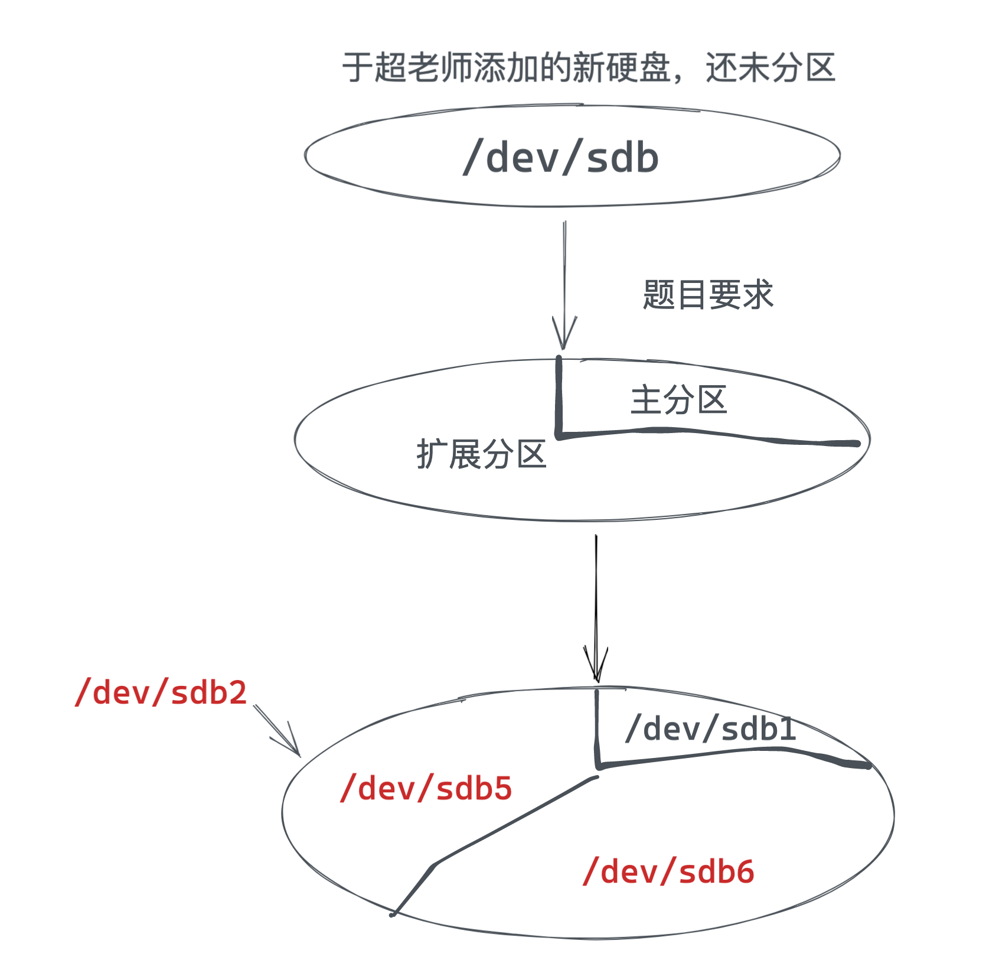
操作截图
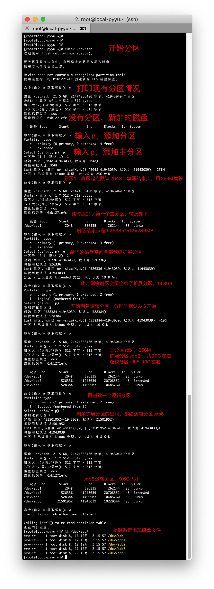
任务完成操作记录
Command (m for help): p
Disk /dev/sdb: 21.5 GB, 21474836480 bytes, 41943040 sectors
Units = sectors of 1 * 512 = 512 bytes
Sector size (logical/physical): 512 bytes / 512 bytes
I/O size (minimum/optimal): 512 bytes / 512 bytes
Disk label type: dos
Disk identifier: 0xf0f33bf9
Device Boot Start End Blocks Id System
Command (m for help): n
Partition type:
p primary (0 primary, 0 extended, 4 free)
e extended
Select (default p): p
Partition number (1-4, default 1): 1
First sector (2048-41943039, default 2048):
Using default value 2048
Last sector, +sectors or +size{K,M,G} (2048-41943039, default 41943039): +256M
Partition 1 of type Linux and of size 256 MiB is set
Command (m for help): p
Disk /dev/sdb: 21.5 GB, 21474836480 bytes, 41943040 sectors
Units = sectors of 1 * 512 = 512 bytes
Sector size (logical/physical): 512 bytes / 512 bytes
I/O size (minimum/optimal): 512 bytes / 512 bytes
Disk label type: dos
Disk identifier: 0xf0f33bf9
Device Boot Start End Blocks Id System
/dev/sdb1 2048 526335 262144 83 Linux
Command (m for help): n
Partition type:
p primary (1 primary, 0 extended, 3 free)
e extended
Select (default p): e
Partition number (2-4, default 2):
First sector (526336-41943039, default 526336):
Using default value 526336
Last sector, +sectors or +size{K,M,G} (526336-41943039, default 41943039):
Using default value 41943039
Partition 2 of type Extended and of size 19.8 GiB is set
Command (m for help): p
Disk /dev/sdb: 21.5 GB, 21474836480 bytes, 41943040 sectors
Units = sectors of 1 * 512 = 512 bytes
Sector size (logical/physical): 512 bytes / 512 bytes
I/O size (minimum/optimal): 512 bytes / 512 bytes
Disk label type: dos
Disk identifier: 0xf0f33bf9
Device Boot Start End Blocks Id System
/dev/sdb1 2048 526335 262144 83 Linux
/dev/sdb2 526336 41943039 20708352 5 Extended
Command (m for help): n
Partition type:
p primary (1 primary, 1 extended, 2 free)
l logical (numbered from 5)
Select (default p): l
Adding logical partition 5
First sector (528384-41943039, default 528384):
Using default value 528384
Last sector, +sectors or +size{K,M,G} (528384-41943039, default 41943039): +10G
Partition 5 of type Linux and of size 10 GiB is set
Command (m for help): p
Disk /dev/sdb: 21.5 GB, 21474836480 bytes, 41943040 sectors
Units = sectors of 1 * 512 = 512 bytes
Sector size (logical/physical): 512 bytes / 512 bytes
I/O size (minimum/optimal): 512 bytes / 512 bytes
Disk label type: dos
Disk identifier: 0xf0f33bf9
Device Boot Start End Blocks Id System
/dev/sdb1 2048 526335 262144 83 Linux
/dev/sdb2 526336 41943039 20708352 5 Extended
/dev/sdb5 528384 21499903 10485760 83 Linux
Command (m for help): n
Partition type:
p primary (1 primary, 1 extended, 2 free)
l logical (numbered from 5)
Select (default p): l
Adding logical partition 6
First sector (21501952-41943039, default 21501952):
Using default value 21501952
Last sector, +sectors or +size{K,M,G} (21501952-41943039, default 41943039):
Using default value 41943039
Partition 6 of type Linux and of size 9.8 GiB is set
Command (m for help): p
Disk /dev/sdb: 21.5 GB, 21474836480 bytes, 41943040 sectors
Units = sectors of 1 * 512 = 512 bytes
Sector size (logical/physical): 512 bytes / 512 bytes
I/O size (minimum/optimal): 512 bytes / 512 bytes
Disk label type: dos
Disk identifier: 0xf0f33bf9
Device Boot Start End Blocks Id System
/dev/sdb1 2048 526335 262144 83 Linux
/dev/sdb2 526336 41943039 20708352 5 Extended
/dev/sdb5 528384 21499903 10485760 83 Linux
/dev/sdb6 21501952 41943039 10220544 83 Linux
Command (m for help): n
Partition type:
p primary (1 primary, 1 extended, 2 free)
l logical (numbered from 5)
Select (default p): l
Adding logical partition 7
No free sectors available
Command (m for help): w
The partition table has been altered!
Calling ioctl() to re-read partition table.
Syncing disks.
[root@lamp-241 ~]# ll /dev/sdb*
brw-rw---- 1 root disk 8, 16 Mar 2 01:58 /dev/sdb
brw-rw---- 1 root disk 8, 17 Mar 2 01:58 /dev/sdb1
brw-rw---- 1 root disk 8, 18 Mar 2 01:58 /dev/sdb2
brw-rw---- 1 root disk 8, 21 Mar 2 01:58 /dev/sdb5
brw-rw---- 1 root disk 8, 22 Mar 2 01:58 /dev/sdb6
[root@lamp-241 ~]#
最后查看分区情况
[root@lamp-241 ~]# lsblk
NAME MAJ:MIN RM SIZE RO TYPE MOUNTPOINT
sda 8:0 0 20G 0 disk
├─sda1 8:1 0 1G 0 part /boot
└─sda2 8:2 0 19G 0 part
├─centos-root 253:0 0 17G 0 lvm /
└─centos-swap 253:1 0 2G 0 lvm [SWAP]
sdb 8:16 0 20G 0 disk
├─sdb1 8:17 0 256M 0 part
├─sdb2 8:18 0 1K 0 part
├─sdb5 8:21 0 10G 0 part
└─sdb6 8:22 0 9.8G 0 part
sr0 11:0 1 4.2G 0 rom
partx刷新分区
如果你创建完了分区，没有正确读取到分区信息，可能是linux内核还未读取到分区信息，可以主动告诉linux内核，新的分区情况。
#让内核重读分区表
# partx -a /dev/sdb
查看是mbr还是gpt？
fdisk命令看
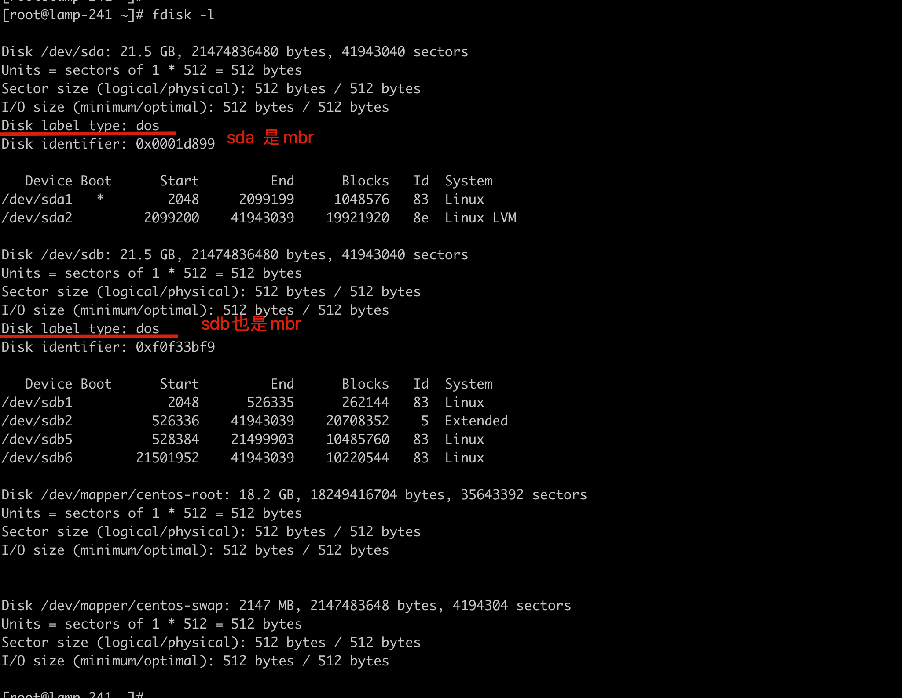
parted命令看
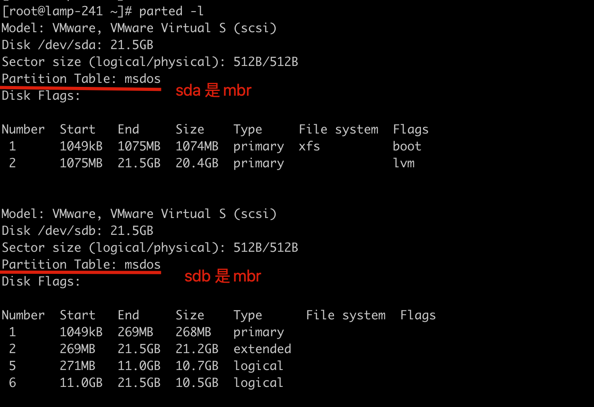
任务，操作sdb硬盘（gpt分区）
当你在企业里遇见，超过2TB的大硬盘分区，就必须用GPT分区了。
小于2TB的磁盘都可以用fdisk分区，但是大于2TB的磁盘，只能用parted命令分区，且转换磁盘为GPT格式
于超老师这里删除了/dev/sdb磁盘的所有分区，使用的是20G的硬盘模拟,同学们可以自己添加新硬盘。
[root@lamp-241 ~]# fdisk /dev/sdb
Welcome to fdisk (util-linux 2.23.2).
Changes will remain in memory only, until you decide to write them.
Be careful before using the write command.
Command (m for help): d
Partition number (1,2,5,6, default 6):
按下d即可删除分区，可以是主分区1，以及扩展分区2（携带删除所有逻辑分区）
最后按下w写入磁盘。
查看当前分区情况
[root@lamp-241 ~]# lsblk
NAME MAJ:MIN RM SIZE RO TYPE MOUNTPOINT
sda 8:0 0 20G 0 disk
├─sda1 8:1 0 1G 0 part /boot
└─sda2 8:2 0 19G 0 part
├─centos-root 253:0 0 17G 0 lvm /
└─centos-swap 253:1 0 2G 0 lvm [SWAP]
sdb 8:16 0 20G 0 disk
sr0 11:0 1 4.2G 0 rom
parted命令分区GPT
- gpt分区表，没有扩展分区的类型，只有主分区、逻辑分区。
- 可以用parted命令对磁盘分区为GPT，但是比较麻烦
- 可以用parted命令，修改磁盘分区表类型（gpt改为mbr）
- fdisk命令是专门针对mbr分区格式的，无法操作GPT格式硬盘。
parted命令修改磁盘为mbr类型。
[root@lamp-241 ~]# parted /dev/sdb
GNU Parted 3.1
Using /dev/sdb
Welcome to GNU Parted! Type 'help' to view a list of commands.
修改磁盘分区表类型为mbr类型
(parted) mktable msdos
Warning: The existing disk label on /dev/sdb will be destroyed and all data on this disk will be lost. Do you want to continue?
Yes/No? yes
(parted)
(parted) p
Model: VMware, VMware Virtual S (scsi)
Disk /dev/sdb: 21.5GB
Sector size (logical/physical): 512B/512B
Partition Table: msdos
Disk Flags:
Number Start End Size Type File system Flags
(parted)
gdisk命令分区gpt类型
由于fdisk命令不支持gpt分区，parted命令又不好用，因此用gdisk命令(同样支持mbr分区表)。
安装gdisk命令
[root@lamp-241 ~]# yum install gdisk -y
-l 列出硬盘的分区表信息
[root@lamp-241 ~]# gdisk -l /dev/sdb
GPT fdisk (gdisk) version 0.8.10
Partition table scan:
MBR: MBR only
BSD: not present
APM: not present
GPT: not present
***************************************************************
Found invalid GPT and valid MBR; converting MBR to GPT format
in memory.
***************************************************************
Disk /dev/sdb: 41943040 sectors, 20.0 GiB
Logical sector size: 512 bytes
Disk identifier (GUID): 951AECF9-82E1-4DBA-9C2A-EECA931CC6E8
Partition table holds up to 128 entries
First usable sector is 34, last usable sector is 41943006
Partitions will be aligned on 2048-sector boundaries
Total free space is 41942973 sectors (20.0 GiB)
Number Start (sector) End (sector) Size Code Name
[root@lamp-241 ~]#
[root@lamp-241 ~]#
gdisk对磁盘分区为gpt
查看gdisk语法帮助
[root@lamp-241 ~]# gdisk /dev/sdb
GPT fdisk (gdisk) version 0.8.10
Partition table scan:
MBR: MBR only
BSD: not present
APM: not present
GPT: not present
***************************************************************
Found invalid GPT and valid MBR; converting MBR to GPT format
in memory. THIS OPERATION IS POTENTIALLY DESTRUCTIVE! Exit by
typing 'q' if you don't want to convert your MBR partitions
to GPT format!
***************************************************************
Command (? for help):
查看帮助信息
Command (? forhelp): ?
b backupGPTdatatoafile
c changeapartition'sname
d deleteapartition #删除分区
i showdetailedinformationonapartition
l listknownpartitiontypes #列出分区类型
n addanewpartition #添加新分区
o createanewemptyGUIDpartitiontable (GPT)
p printthepartitiontable #打印分区列表
q quitwithoutsavingchanges #不保存退出
r recoveryandtransformationoptions (expertsonly)
s sortpartitions
t changeapartition'stypecode #修改分区类型
v verifydisk
w writetabletodiskandexit #保存退出
x extrafunctionality (expertsonly)
? printthismenu
添加新分区
Command (? for help): p
Disk /dev/sdb: 41943040 sectors, 20.0 GiB
Logical sector size: 512 bytes
Disk identifier (GUID): D243B068-B5C3-4A77-8A70-86B69C0A9ED5
Partition table holds up to 128 entries
First usable sector is 34, last usable sector is 41943006
Partitions will be aligned on 2048-sector boundaries
Total free space is 41942973 sectors (20.0 GiB)
Number Start (sector) End (sector) Size Code Name
添加分区指令
Command (? for help): n
Partition number (1-128, default 1): 1
First sector (34-41943006, default = 2048) or {+-}size{KMGTP}:
Last sector (2048-41943006, default = 41943006) or {+-}size{KMGTP}: +2G
Current type is 'Linux filesystem'
Hex code or GUID (L to show codes, Enter = 8300):
Changed type of partition to 'Linux filesystem'
Command (? for help): p
Disk /dev/sdb: 41943040 sectors, 20.0 GiB
Logical sector size: 512 bytes
Disk identifier (GUID): D243B068-B5C3-4A77-8A70-86B69C0A9ED5
Partition table holds up to 128 entries
First usable sector is 34, last usable sector is 41943006
Partitions will be aligned on 2048-sector boundaries
Total free space is 37748669 sectors (18.0 GiB)
Number Start (sector) End (sector) Size Code Name
1 2048 4196351 2.0 GiB 8300 Linux filesystem
Command (? for help): n
Partition number (2-128, default 2):
First sector (34-41943006, default = 4196352) or {+-}size{KMGTP}:
Last sector (4196352-41943006, default = 41943006) or {+-}size{KMGTP}: +10G
Current type is 'Linux filesystem'
Hex code or GUID (L to show codes, Enter = 8300):
Changed type of partition to 'Linux filesystem'
Command (? for help): p
Disk /dev/sdb: 41943040 sectors, 20.0 GiB
Logical sector size: 512 bytes
Disk identifier (GUID): D243B068-B5C3-4A77-8A70-86B69C0A9ED5
Partition table holds up to 128 entries
First usable sector is 34, last usable sector is 41943006
Partitions will be aligned on 2048-sector boundaries
Total free space is 16777149 sectors (8.0 GiB)
Number Start (sector) End (sector) Size Code Name
1 2048 4196351 2.0 GiB 8300 Linux filesystem
2 4196352 25167871 10.0 GiB 8300 Linux filesystem
Command (? for help): w
Final checks complete. About to write GPT data. THIS WILL OVERWRITE EXISTING
PARTITIONS!!
Do you want to proceed? (Y/N): y
OK; writing new GUID partition table (GPT) to /dev/sdb.
The operation has completed successfully.
验收分区
[root@lamp-241 ~]# lsblk
NAME MAJ:MIN RM SIZE RO TYPE MOUNTPOINT
sda 8:0 0 20G 0 disk
├─sda1 8:1 0 1G 0 part /boot
└─sda2 8:2 0 19G 0 part
├─centos-root 253:0 0 17G 0 lvm /
└─centos-swap 253:1 0 2G 0 lvm [SWAP]
sdb 8:16 0 20G 0 disk
├─sdb1 8:17 0 2G 0 part
└─sdb2 8:18 0 10G 0 part
sr0 11:0 1 4.2G 0 rom
重新改为mbr分区类型
重置为mbr类型，会删除所有分区
[root@lamp-241 ~]# parted /dev/sdb
GNU Parted 3.1
Using /dev/sdb
Welcome to GNU Parted! Type 'help' to view a list of commands.
(parted) mktable msdos
Warning: The existing disk label on /dev/sdb will be destroyed and all data on this disk will be lost. Do you want to continue?
Yes/No? yes
(parted) p
Model: VMware, VMware Virtual S (scsi)
Disk /dev/sdb: 21.5GB
Sector size (logical/physical): 512B/512B
Partition Table: msdos
Disk Flags:
Number Start End Size Type File system Flags
再次查看分区表类型
[root@lamp-241 ~]# fdisk -l /dev/sdb
Disk /dev/sdb: 21.5 GB, 21474836480 bytes, 41943040 sectors
Units = sectors of 1 * 512 = 512 bytes
Sector size (logical/physical): 512 bytes / 512 bytes
I/O size (minimum/optimal): 512 bytes / 512 bytes
Disk label type: dos
Disk identifier: 0x000ad5a3
Device Boot Start End Blocks Id System
最后再重新改为mbr
任务：将sdb硬盘分区
- 1个主分区 5G
- 1个扩展分区 15G
- 2个逻辑分区
[root@lamp-241 ~]# fdisk /dev/sdb
Welcome to fdisk (util-linux 2.23.2).
Changes will remain in memory only, until you decide to write them.
Be careful before using the write command.
Command (m for help): n
Partition type:
p primary (0 primary, 0 extended, 4 free)
e extended
Select (default p): p
Partition number (1-4, default 1):
First sector (2048-41943039, default 2048):
Using default value 2048
Last sector, +sectors or +size{K,M,G} (2048-41943039, default 41943039): +5G
Partition 1 of type Linux and of size 5 GiB is set
Command (m for help): n
Partition type:
p primary (1 primary, 0 extended, 3 free)
e extended
Select (default p): e
Partition number (2-4, default 2):
First sector (10487808-41943039, default 10487808):
Using default value 10487808
Last sector, +sectors or +size{K,M,G} (10487808-41943039, default 41943039):
Using default value 41943039
Partition 2 of type Extended and of size 15 GiB is set
Command (m for help): n
Partition type:
p primary (1 primary, 1 extended, 2 free)
l logical (numbered from 5)
Select (default p): l
Adding logical partition 5
First sector (10489856-41943039, default 10489856):
Using default value 10489856
Last sector, +sectors or +size{K,M,G} (10489856-41943039, default 41943039): +8G
Partition 5 of type Linux and of size 8 GiB is set
Command (m for help): n
Partition type:
p primary (1 primary, 1 extended, 2 free)
l logical (numbered from 5)
Select (default p): l
Adding logical partition 6
First sector (27269120-41943039, default 27269120):
Using default value 27269120
Last sector, +sectors or +size{K,M,G} (27269120-41943039, default 41943039):
Using default value 41943039
Partition 6 of type Linux and of size 7 GiB is set
Command (m for help): p
Disk /dev/sdb: 21.5 GB, 21474836480 bytes, 41943040 sectors
Units = sectors of 1 * 512 = 512 bytes
Sector size (logical/physical): 512 bytes / 512 bytes
I/O size (minimum/optimal): 512 bytes / 512 bytes
Disk label type: dos
Disk identifier: 0x000ad5a3
Device Boot Start End Blocks Id System
/dev/sdb1 2048 10487807 5242880 83 Linux
/dev/sdb2 10487808 41943039 15727616 5 Extended
/dev/sdb5 10489856 27267071 8388608 83 Linux
/dev/sdb6 27269120 41943039 7336960 83 Linux
Command (m for help): w
The partition table has been altered!
Calling ioctl() to re-read partition table.
Syncing disks.
[root@lamp-241 ~]#
检查分区情况
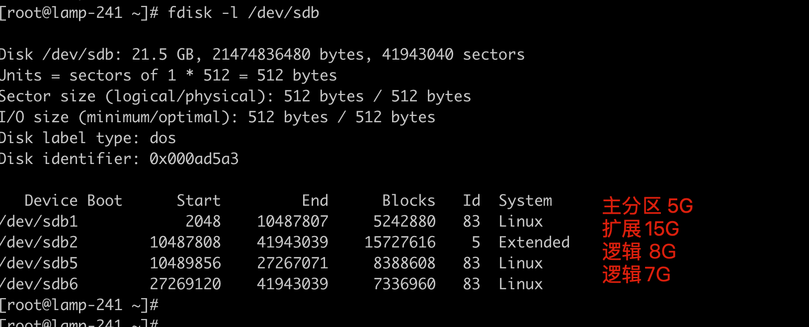
格式化文件系统
分区完毕之后，就得进行格式化文件系统，磁盘才可以使用，这就好比，你买了个房，打完隔断之后，装修一下才能住！
磁盘格式化是因为不同的操作系统设置的文件属性、权限各不相同，还得将分区格式化后，成为操作系统能够识别、兼容的文件系统（filesystem）。
分区搞明白之后，下一步就是要进行分区格式化文件系统
1.分区等于是对磁盘的扇区做分配处理，每一个分区，占用哪一段连续的分区。
2.分区完了之后，你是一个普通人类，如何去读写扇区里的数据？答案就是文件系统
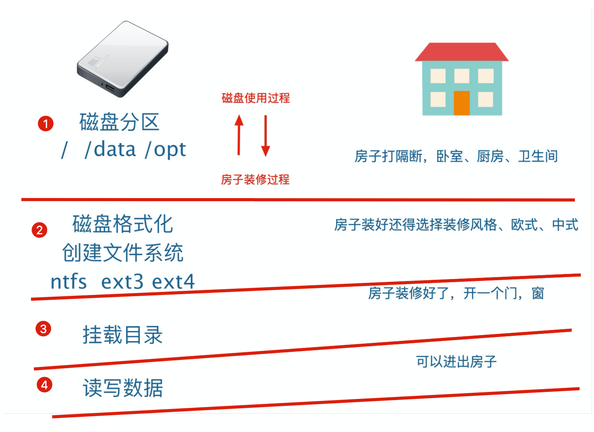
文件系统介绍
计算机的文件系统是一种存储和组织计算机数据的方法，它使得对其访问和查找变得容易，文件系统使用文件和树形目录的抽象逻辑概念代替了硬盘和光盘等物理设备使用数据块的概念
用户使用文件系统来保存数据不必关心数据实际保存在硬盘（或者光盘）的地址(数据块，也有编号)为多少的数据块上，只需要记住这个文件的所属目录和文件名，即可访问该文件。
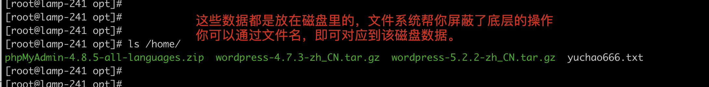
图解文件系统的使用
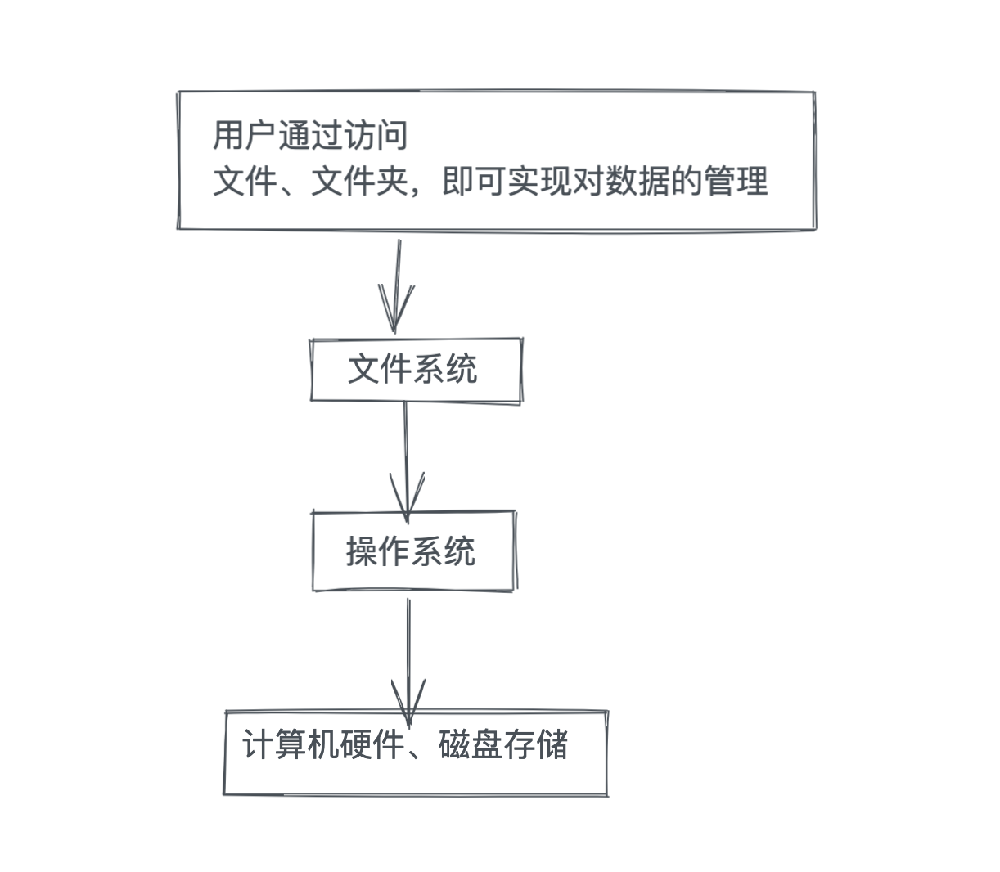
有哪些文件系统
磁盘文件系统是一种用来利用数据存储设备来保存计算机文件的计算机程序（c、c++）。
当你在企业里，比如遇见业务需要，公司需要你评估各种文件系统，有一批存储设备需要格式化文件系统，如U盘，移动硬盘，固态硬盘等。
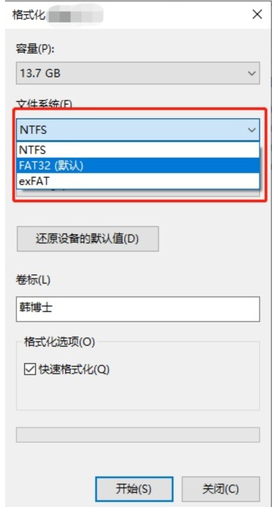
目前常见的系统平台就3类，分别是 微软的Windows，苹果的MacOS，开源社区的Linux，每个操作系统都有设计自己的文件系统，以本文讨论的几款文件系统来说，他们的归属如下：
| Dev | FAT32 | exFAT | NTFS | ReFS | HFS/HFS+ | APFS | Ext2/3/4 | XFS |
|---|---|---|---|---|---|---|---|---|
| Window | √ | √ | √ | √ | ||||
| Mac | √ | √ | ||||||
| Linux | √ | √ |
文件系统的区别
总之不同的文件系统，区别在于
- 兼容性，不同系统平台，不一定识别、或者无法读写操作
- 容量大小、支持硬盘最大容量有限制
文件系统的兼容性
我们经常需要跨平台工作，例如从 Win10 拷贝个文件到U盘，然后插入到 Mac Book中，或者 Linux 电脑中，这时候如果U盘的文件系统兼容性不够好，就会导致有的平台能识别U盘的文件，有的电脑无法识别。
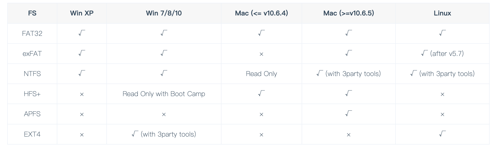
不同系统之间的文件系统不兼容，就得通过一些第三方工具来实现读写，否则可能只能读取，无法写入。
支持的磁盘容量限制
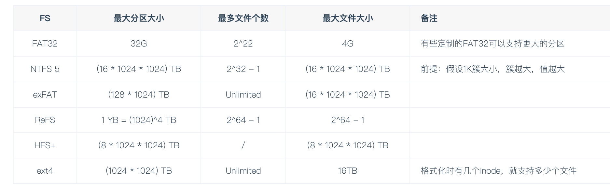
不同系统支持的文件系统
- window
- 最古老的FAT32用于windows XP，无法支持大于32G的存储分区和大于4G的文件
- Win10 使用NTFS，支持加密、压缩、权限控制等等，且还支持日志保证数据一致性，主流硬盘都是NTFS
- 专门给闪存使用的ExFAT，属于是FAT32和NTFS选择的折中，并且同时支持win和macos。
- linux
Ext系列则是Linux社区上设计的文件系统，由于Linux称霸服务器端，大部分开发者其实都或多或少接触过Ext系列文件系统。- 在centos7.x之前，都还是Ext4、Ext3都支持日志功能
- （日志功能指的是，不会因为突然断电，导致磁盘数据损坏，能够通过日志恢复磁盘文件）
- XFS（重点，centos7开始默认文件系统）
日志文件系统
journaling fs就是我们常说的： 日志型文件系统。
比较典型的有： ext3, ext4, xfs等， 而ext2是不支持 日志的文件系统，该文件系统基本上已经不再使用；
简单介绍其实现原理： 在磁盘上有一块区域专门用来保存日志，叫做journaling（日志） 区域，在更新磁盘上特定的block之前，首先把要做的变更 记录到 journaling 区域，然后才去更新相应的block。
这样在系统崩溃的时候，可以通过journaling区域的信息，进行replay, 从而实现恢复；
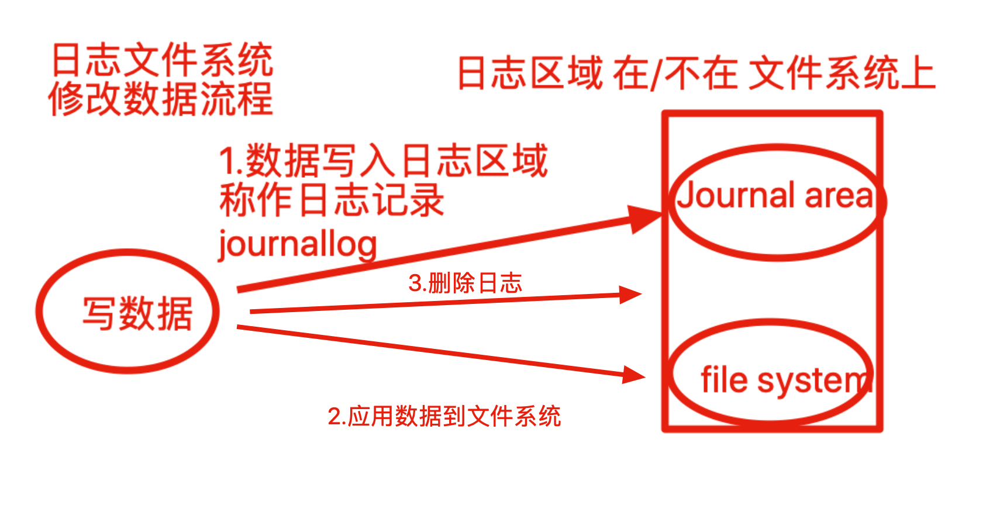
简单理解
如果是非日志文件系统，进行读写操作，内核直接修改文件元数据，如果在写入过程异常崩溃，文件一致性就会出错，且修复过程很漫长，因此必须使用日志类型文件系统。
XFS（centos7）
XFS是高性能文件系统，由于它的高性能，XFS成为了许多企业级系统的首选，特别是有大量数据，需要结构化伸缩性和稳定性的。
例如，RHEL/CentOS 7 和Oracle Linux将XFS作为默认文件系统，SUSE/openSUSE已经为XFS做了长期支持。
XFS有许多独特的性能提升功能使他从众多文件系统中脱颖而出，像可伸缩/并行 IO，元数据日志，热碎片整理，IO 暂停/恢复，延迟分配等。
XFS 文件系统有一些缺陷，例如它不能压缩，删除大量文件时性能低下。
因此，在大公司里，面对超大流量的业务，面对特殊领域的业务，服务器依然会采用其他的文件系统，我们只需要根据业务，继续做调研，然后重新格式化硬盘，选择一个合适的文件系统即可。
网络文件系统
- Smb，Server Message Block、服务消息块，文件共享协议
- NFS，Network File System(NFS)，网络文件系统，访问网络中其他主机的文件就像是自己计算机一样
分布式文件系统
- Ceph 是一个统一的分布式存储系统，设计初衷是提供较好的性能、可靠性和可扩展性。
格式化文件系统实践
windows常用文件系统
FAT32 最大支持单个文件大小不超过4G
NTFS，最大可以存储16EB数据
linux常用文件系统
EXT4 单个文件最大支持16TB，最大支持1EB文件系统，centos7之前用这个多
xfs 比ext4更先进的文件系统，最大支持8EB文件系统，单个文件最大支持8EB，也是centos7默认的文件系统。
blkid命令查看分区信息
blkid 命令：可以查看块设备（包括交换分区）的文件系统类型、LABEL、UUID、挂载目录等信息
指定查看磁盘或分区的信息
[root@yuchao-linux-242 yum.repos.d]# blkid /dev/sda
/dev/sda: PTTYPE="dos"
[root@yuchao-linux-242 yum.repos.d]#
[root@yuchao-linux-242 yum.repos.d]# blkid /dev/sda1
/dev/sda1: UUID="c07b71e0-a0a4-41e5-9c12-24646b84c73f" TYPE="xfs"
显示所有分区的信息
[root@yuchao-linux-242 yum.repos.d]# blkid
/dev/sda1: UUID="c07b71e0-a0a4-41e5-9c12-24646b84c73f" TYPE="xfs"
/dev/sda2: UUID="S2y7zo-9SQ9-prrr-ZOtT-NdW8-vVLo-jFwngl" TYPE="LVM2_member"
/dev/sr0: UUID="2018-05-03-20-55-23-00" LABEL="CentOS 7 x86_64" TYPE="iso9660" PTTYPE="dos"
/dev/mapper/centos-root: UUID="0a7fed5a-edce-4354-aa17-2aa6781e1b85" TYPE="xfs"
/dev/mapper/centos-swap: UUID="706d68e5-0a75-46d2-ab62-cede96863212" TYPE="swap"
mkfs命令
mkfs命令
mkfs把分区格式化为某种文件系统
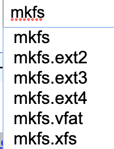
xfs_info查看文件系统属性
dumpe2fs命令用于打印文件系统的超级块和块组信息，用于ext2 ext3 ext4文件
然而centos7使用的xfs文件系统，更换xfs_info命令查看分区信息
lsblk命令
列出所有设备的关系、以及显示文件系统。
[root@lamp-241 ~]# lsblk -f
NAME FSTYPE LABEL UUID MOUNTPOINT
sda
├─sda1 xfs 67db0801-a3e0-49a8-9ca9-2313dc74d07b /boot
└─sda2 LVM2_member UX2cdQ-UKp2-EaSV-cs9j-pmQ7-KQ7O-eVU5Kh
├─centos-root xfs 05e85031-542d-4a1b-91a0-b6fa7ec0df49 /
└─centos-swap swap 9230f736-0176-47cb-bac0-0a9d58ba4090 [SWAP]
sdb
├─sdb1
├─sdb2
├─sdb5
└─sdb6
sr0 iso9660 CentOS 7 x86_64 2018-05-03-20-55-23-00
会发现，我们创建好的sdb分区，都没有文件系统，是无法使用的。
报错，未知的文件系统null，空。
[root@lamp-241 ~]# mount /dev/sdb5 /mnt
mount: /dev/sdb5 is write-protected, mounting read-only
mount: unknown filesystem type '(null)'
给分区加上文件系统
给刚打好隔断的房间，装修------给刚分区号的磁盘格式化文件系统
主流的服务器使用文件系统，就是ext4和xfs两种，区别是高并发下压测下
- ext4更稳定
- xfs性能更强
ext4
[root@lamp-241 ~]# mkfs.ext4 /dev/sdb5
mke2fs 1.42.9 (28-Dec-2013)
Filesystem label=
OS type: Linux
Block size=4096 (log=2)
Fragment size=4096 (log=2)
Stride=0 blocks, Stripe width=0 blocks
524288 inodes, 2097152 blocks
104857 blocks (5.00%) reserved for the super user
First data block=0
Maximum filesystem blocks=2147483648
64 block groups
32768 blocks per group, 32768 fragments per group
8192 inodes per group
Superblock backups stored on blocks:
32768, 98304, 163840, 229376, 294912, 819200, 884736, 1605632
Allocating group tables: done
Writing inode tables: done
Creating journal (32768 blocks):
done
Writing superblocks and filesystem accounting information: done
挂载使用该分区
[root@lamp-241 ~]# mount /dev/sdb5 /yc-ext4/
[root@lamp-241 ~]#
[root@lamp-241 ~]# df -h
Filesystem Size Used Avail Use% Mounted on
/dev/mapper/centos-root 17G 6.1G 11G 36% /
devtmpfs 899M 0 899M 0% /dev
tmpfs 911M 0 911M 0% /dev/shm
tmpfs 911M 9.6M 902M 2% /run
tmpfs 911M 0 911M 0% /sys/fs/cgroup
/dev/sda1 1014M 142M 873M 14% /boot
tmpfs 183M 0 183M 0% /run/user/0
/dev/sdb5 7.8G 36M 7.3G 1% /yc-ext4
[root@lamp-241 ~]# touch /yc-ext4/超哥牛逼.txt
[root@lamp-241 ~]#
[root@lamp-241 ~]# ls /yc-ext4/
lost+found 超哥牛逼.txt
[root@lamp-241 ~]# umount /yc-ext4/
[root@lamp-241 ~]#
[root@lamp-241 ~]# ls /yc-ext4/
[root@lamp-241 ~]#
xfs
[root@lamp-241 ~]# mkfs.xfs /dev/sdb6
meta-data=/dev/sdb6 isize=512 agcount=4, agsize=458560 blks
= sectsz=512 attr=2, projid32bit=1
= crc=1 finobt=0, sparse=0
data = bsize=4096 blocks=1834240, imaxpct=25
= sunit=0 swidth=0 blks
naming =version 2 bsize=4096 ascii-ci=0 ftype=1
log =internal log bsize=4096 blocks=2560, version=2
= sectsz=512 sunit=0 blks, lazy-count=1
realtime =none extsz=4096 blocks=0, rtextents=0
查看分区和文件系统
[root@lamp-241 ~]# lsblk -f
NAME FSTYPE LABEL UUID MOUNTPOINT
sda
├─sda1 xfs 67db0801-a3e0-49a8-9ca9-2313dc74d07b /boot
└─sda2 LVM2_member UX2cdQ-UKp2-EaSV-cs9j-pmQ7-KQ7O-eVU5Kh
├─centos-root xfs 05e85031-542d-4a1b-91a0-b6fa7ec0df49 /
└─centos-swap swap 9230f736-0176-47cb-bac0-0a9d58ba4090 [SWAP]
sdb
├─sdb1
├─sdb2
├─sdb5 ext4 f78d5154-6690-4f7b-926a-50d223efba55
└─sdb6 xfs 5e52d409-e1a8-4bd3-b70b-46c45e3ffb76
sr0 iso9660 CentOS 7 x86_64 2018-05-03-20-55-23-00
挂载xfs分区
[root@lamp-241 ~]# mount /dev/sdb6 /yc-ext4/
[root@lamp-241 ~]#
[root@lamp-241 ~]# ls /yc-ext4/
[root@lamp-241 ~]#
[root@lamp-241 ~]# touch /yc-ext4/于超老师带你学磁盘管理.txt
[root@lamp-241 ~]#
[root@lamp-241 ~]# ls /yc-ext4/
于超老师带你学磁盘管理.txt
[root@lamp-241 ~]#
[root@lamp-241 ~]# umount /yc-ext4/
[root@lamp-241 ~]#
[root@lamp-241 ~]# ls /yc-ext4/
mount挂载实践
Linux 下设备不挂载不能使用，不挂载的设备相当于没门没窗户的监狱(进不去出不来)，挂载相当于给设备创造了一个入口(挂载点，一般为目录)
例如图示Linux访问U盘数据
图1，还未挂载
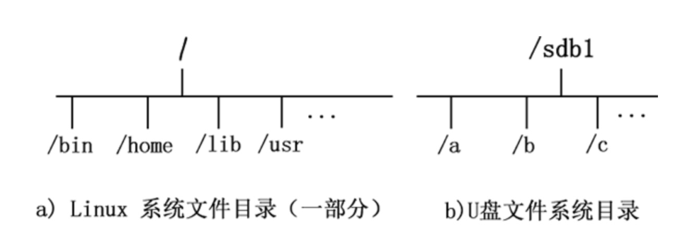
图2，挂载后
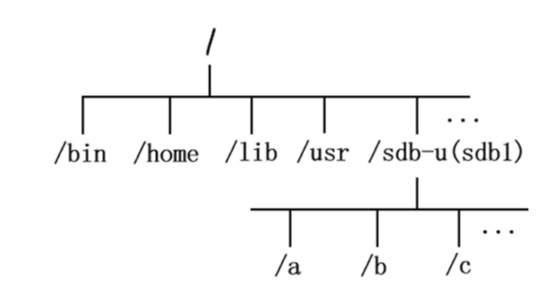
挂载通常是将一个存储设备挂接到一个已经存在的目录上，访问这个目录就是访问该存储设备的内容。
对于Linux系统来说，一切皆文件，所有文件都放在以根目录为起点的树形目录结构中，任何硬件设备也都是文件形式
如图所示，是U盘存储设备和Linux系统自己的文件系统结构，此时Linux想要使用U盘的硬件设备，必须将Linux本身的目录和硬件设备的文件目录合二为一，此过程就称之为挂载。
挂载点
挂载操作会隐藏原本Linux目录中的文件，因此选择Linux本身的目录，最好是新建空目录用于挂载
挂载之后，这个目录被称为挂载点。
挂载注意事项
1.一个目录、同一时间只能被一个设备挂载
2.一个设备可以挂载多个目录
3.如果一个目录被多个设备挂载，只能看到最后一个挂载的设备数据，其他的设备数据会被隐藏。
4.工作里建议用新的文件夹，作为挂载点。
mount命令
mount命令可以将指定的文件系统挂载到指定目录（挂载点），在Linux系统下必须先挂载后才能访问设备资料
- 新的硬盘插到机器上，分区、格式化文件系统后，此时可以可以存放数据了
- 此时的硬盘插到linux上，也只是读取出了一个封闭的盒子，无法读写
- 和linux的文件夹进行
关联、挂载后，即可通过访问被挂载的文件夹，访问到硬盘的数据
mount选项
| 参数 | 解释 |
|---|---|
| -l | 显示系统以挂载的设备信息 |
| -a | 加载文件/etc/fstab中设置的所有设备 |
| -t | t<文件系统类型> 指定设备的文件系统类型。如果不设置，mount自行选择挂载的文件类型 minix Linux最早使用的文件系统。 ext2 Linux目前的常用文件系统。 msdos MS-DOS 的 FAT。 vfat Win85/98 的 VFAT。 nfs 网络文件系统。 iso9660 CD-ROM光盘的标准文件系统。 ntfs Windows NT的文件系统。 hpfs OS/2文件系统。Windows NT 3.51之前版本的文件系统。 auto 自动检测文件系统。 |
| -o | 添加挂载选项，是安全、性能优化重要参数 |
| -r | 只读，等于-o ro |
| -w | 读写，等-o rw |
mount -o选项详解
| 参数 | 含义 |
|---|---|
| async | 以异步方式处理文件系统I/O操作，数据不会同步写入磁盘，而是写到缓冲区，提高系统性能，但损失数据安全性 |
| sync | 所有I/O操作同步处理，数据同步写入磁盘，性能较弱，数据安全性高 |
| atime/noatime | 文件被访问时是否修改时间戳，不更改时间，可以提高磁盘I/O速度 |
| auto/noauto | 通过-a参数可以自动被挂载/不自动挂载 |
| defaults | 默认值包括rw、suid、dev、exec、auto、nouser、async，/etc/fstab大多默认值 |
| exec/noexec | 是否允许执行二进制程序，取消提供安全性 |
| suid/nosuid | 是否允许suid(特殊权限)生效 |
| user/nouser | 是否允许普通用户挂载 |
| remount | 重新挂载 |
| ro | 只读 |
| rw | 读写 |
mount挂载案例
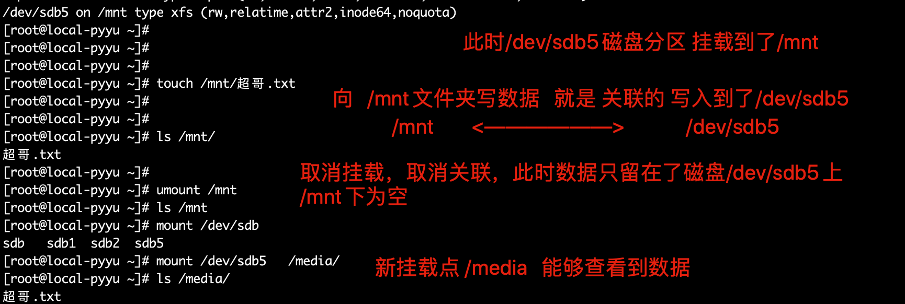
只读挂载
[root@lamp-241 ~]# mount -o ro /dev/sdb6 /mnt
[root@lamp-241 ~]#
[root@lamp-241 ~]# ls /mnt
[root@lamp-241 ~]#
[root@lamp-241 ~]# touch /mnt/超哥牛逼.txt
touch: cannot touch ‘/mnt/超哥牛逼.txt’: Read-only file system
[root@lamp-241 ~]#
禁止可执行文件
[root@lamp-241 ~]# mount -o noexec /dev/sdb6 /mnt
[root@lamp-241 ~]#
[root@lamp-241 ~]# cd /mnt
[root@lamp-241 mnt]# echo 'echo "爱的供养"' > music.sh
[root@lamp-241 mnt]#
[root@lamp-241 mnt]# chmod 777 music.sh
[root@lamp-241 mnt]# ll
total 4
-rwxrwxrwx 1 root root 20 Mar 2 17:54 music.sh
[root@lamp-241 mnt]#
[root@lamp-241 mnt]# ./music.sh
-bash: ./music.sh: Permission denied
[root@lamp-241 mnt]#
重新挂载之后，默认是运行执行挂载目录的文件的。
[root@lamp-241 mnt]# cd ~
[root@lamp-241 ~]#
[root@lamp-241 ~]#
[root@lamp-241 ~]# umount /mnt
[root@lamp-241 ~]# mount /dev/sdb6 /mnt
[root@lamp-241 ~]#
[root@lamp-241 ~]# /mnt/music.sh
爱的供养
[root@lamp-241 ~]# mount -l |grep mnt
/dev/sdb6 on /mnt type xfs (rw,relatime,attr2,inode64,noquota)
参数解释
rw 读写
relatime mount 选项 relatime（relative atime 的意思）。relatime 的意思是访问文件时，仅在 atime 早于文件的更改时间时对 atime 进行更新。
attr2 在磁盘上存储内联扩展属性，提升性能
inode64 允许在文件系统的任意位置创建 inode
noquota 强制关闭所有文件系统限额功能
关于umount的坑
你如果在挂载目录里呆着，是无法umount的。
umount用于取消已经挂载的设备
-f 强制卸载
正常卸载
当该设备无人使用时
无进程在使用时
可以正常卸载
[yuchao-linux01 root ~]$umount /my_sdb7/
[yuchao-linux01 root ~]$df -h|grep my_sdb7
[yuchao-linux01 root ~]$
该目录中有人在访问
重新挂载
[yuchao-linux01 root ~]$mount -a
[yuchao-linux01 root ~]$
再开一个终端，模拟有人在访问该目录
此时无法正常卸载
[yuchao-linux01 root ~]$umount /my_sdb7/
umount: /my_sdb7: target is busy.
(In some cases useful info about processes that use
the device is found by lsof(8) or fuser(1))
[yuchao-linux01 root ~]$
解决办法
1.让那人离开目录
2.干掉操作该目录的进程
使用lsof命令
[yuchao-linux01 root ~]$lsof /my_sdb7/
COMMAND PID USER FD TYPE DEVICE SIZE/OFF NODE NAME
bash 47861 root cwd DIR 8,23 6 64 /my_sdb7
[yuchao-linux01 root ~]$
[yuchao-linux01 root ~]$
[yuchao-linux01 root ~]$ps -ef|grep 47861
root 47861 47859 0 19:31 pts/4 00:00:00 -bash
root 47906 47758 0 19:33 pts/3 00:00:00 grep --color=auto 47861
强制让他滚蛋。。。
[yuchao-linux01 root ~]$ps -ef|grep 47861
root 47861 47859 0 19:31 pts/4 00:00:00 -bash
root 47908 47758 0 19:33 pts/3 00:00:00 grep --color=auto 47861
[yuchao-linux01 root ~]$kill -9 47861
[yuchao-linux01 root ~]$
此时可以正常卸载
[yuchao-linux01 root ~]$df -h |grep my_sdb7
/dev/sdb7 2.0G 33M 2.0G 2% /my_sdb7
[yuchao-linux01 root ~]$
[yuchao-linux01 root ~]$umount /my_sdb7/
[yuchao-linux01 root ~]$
[yuchao-linux01 root ~]$df -h |grep my_sdb7
[yuchao-linux01 root ~]$
开机自动挂载fstab
什么是开机自动挂载?
刚才学的是手动挂载，mount，但是这个操作是临时生效，重启后丢失
如果你重启了服务器，又忘记了去挂载，必然会导致使用该挂载点的程序，全部故障
因此如果你要一直访问这个挂载点，访问该设备，你得设置开机自动挂载
这个功能是/etc/fstab文件
该文件的作用
/etc/fstab配置文件作用是，设置设备开机自动挂载，包括了根目录、以及boot启动分区都是在这里设置的
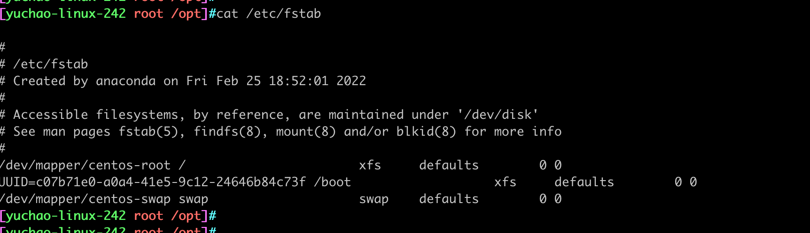
fstab文件语法
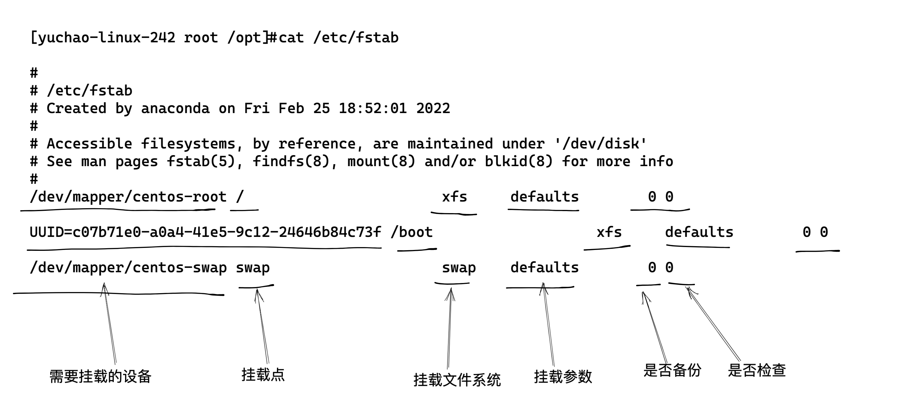
第四列、挂载参数详解
和上面于超老师写的 mount挂载参数一致，它俩一个意思。
第五列、是否备份，了解即可，一般是0
0 不备份
1 每天备份
2 每隔一天备份
第六列、是否检查分区，一般是0
0 不检查
1 先检查该设备
2 排第二检查
自动挂载磁盘分区
[yuchao-linux01 root ~]$blkid /dev/sdb7
/dev/sdb7: UUID="d83e18c9-8b3e-4f38-b25f-6e9818e00b55" TYPE="xfs"
[yuchao-linux01 root ~]$vim /etc/fstab
写入如下挂载信息
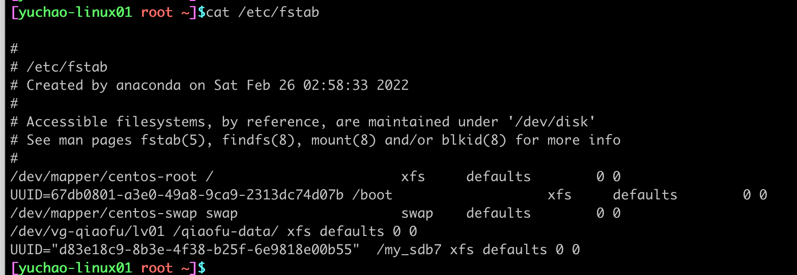
让系统重新挂载所有设备
检查当前的挂载情况
[yuchao-linux01 root ~]$df -h
Filesystem Size Used Avail Use% Mounted on
/dev/mapper/centos-root 17G 8.9G 8.1G 53% /
devtmpfs 3.8G 0 3.8G 0% /dev
tmpfs 3.9G 0 3.9G 0% /dev/shm
tmpfs 3.9G 28M 3.8G 1% /run
tmpfs 3.9G 0 3.9G 0% /sys/fs/cgroup
/dev/sda1 1014M 142M 873M 14% /boot
/dev/mapper/vg--qiaofu-lv01 50G 575M 50G 2% /qiaofu-data
tmpfs 781M 0 781M 0% /run/user/0
挂载所有设备
[yuchao-linux01 root ~]$mount -a
[yuchao-linux01 root ~]$df -h
Filesystem Size Used Avail Use% Mounted on
/dev/mapper/centos-root 17G 8.9G 8.1G 53% /
devtmpfs 3.8G 0 3.8G 0% /dev
tmpfs 3.9G 0 3.9G 0% /dev/shm
tmpfs 3.9G 28M 3.8G 1% /run
tmpfs 3.9G 0 3.9G 0% /sys/fs/cgroup
/dev/sda1 1014M 142M 873M 14% /boot
/dev/mapper/vg--qiaofu-lv01 50G 575M 50G 2% /qiaofu-data
tmpfs 781M 0 781M 0% /run/user/0
/dev/sdb7 2.0G 33M 2.0G 2% /my_sdb7
[yuchao-linux01 root ~]$
重启
重启，查看是否依然会自动挂载
reboot
磁盘管理常用命令
- df
- du
- dd
dd命令
复制文件，且进行数据格式转换。
语法
dd - 转换和复制一个文件
dd if=输入 of=输出 bs=块大小 count=总数
常用
if=file
of=file
bs=size
count=N
命令实践
# 生成一个1G大小的文件
[root@yuchao-tx-server ~]# dd if=/dev/zero of=/opt/1G.txt2 bs=100M count=10
记录了10+0 的读入
记录了10+0 的写出
1048576000字节(1.0 GB)已复制，4.42348 秒，237 MB/秒
查看该文件大小
[root@yuchao-tx-server ~]# ll -h /opt/
总用量 2.0G
-rw-r--r-- 1 root root 1000M 3月 30 23:22 1G.txt
-rw-r--r-- 1 root root 1000M 3月 30 23:23 1G.txt2
drwxr-xr-x 3 root root 4.0K 3月 20 22:19 containerd
linux特殊设备文件
/dev/null
/dev/null代表linux的空设备文件，所有往这个文件里面写入的内容都会丢失，俗称“黑洞”。比较常见的用法是把不需要的输出重定向到这个文件。
ping yuchaoit.cn > /dev/null &
/dev/zero
零”设备，可以无限的提供空字符（0x00，ASCII代码NUL）。常用来生成一个特定大小的文件。
dd if=/dev/zero of=test.log bs=1M count=50
/dev/random和/dev/urandom
dev/random和/dev/urandom是Linux系统中提供的随机伪设备，这两个设备的任务，是提供永不为空的随机字节数据流。很多解密程序与安全应用程序（如SSH Keys,SSL Keys等）需要它们提供的随机数据流。
危险玩法，比如实现类似于shred粉碎文件的作用
[root@yuchao-tx-server ~]# dd bs=1M count=30 if=/dev/urandom of=./t1
也可以销毁硬盘分区数据
dd if=/dev/urandom of=/dev/sda5
移动介质挂载
linux不像windows那样，设备插上，自动可以通过设备名，访问u盘或光盘的数据，得手动挂载后可访问。
光盘挂载
[yuchao-linux-242 root ~]#mount /dev/sr0 /mnt
mount: /dev/sr0 is write-protected, mounting read-only
[yuchao-linux-242 root ~]#
[yuchao-linux-242 root ~]#df -h |grep mnt
/dev/sr0 4.2G 4.2G 0 100% /mnt
[yuchao-linux-242 root ~]#
[yuchao-linux-242 root ~]#ll /mnt
total 678
-rw-rw-r-- 1 root root 14 May 2 2018 CentOS_BuildTag
drwxr-xr-x 3 root root 2048 May 4 2018 EFI
-rw-rw-r-- 1 root root 227 Aug 30 2017 EULA
-rw-rw-r-- 1 root root 18009 Dec 10 2015 GPL
drwxr-xr-x 3 root root 2048 May 4 2018 images
drwxr-xr-x 2 root root 2048 May 4 2018 isolinux
drwxr-xr-x 2 root root 2048 May 4 2018 LiveOS
drwxrwxr-x 2 root root 655360 May 4 2018 Packages
drwxrwxr-x 2 root root 4096 May 4 2018 repodata
-rw-rw-r-- 1 root root 1690 Dec 10 2015 RPM-GPG-KEY-CentOS-7
-rw-rw-r-- 1 root root 1690 Dec 10 2015 RPM-GPG-KEY-CentOS-Testing-7
-r--r--r-- 1 root root 2883 May 4 2018 TRANS.TBL
Eject弹出设备命令
eject # 弹出光驱
eject -r /dev/sr0 # 指定设备弹出
[yuchao-linux-242 root ~]#eject
U盘挂载
安装工具包
[yuchao-linux-242 root ~]#yum install usbutils -y
查看usb设备列表
[yuchao-linux-242 root ~]#lsusb
查看u盘信息
[yuchao-linux-242 root ~]#fdisk -l /dev/sdb
Disk /dev/sdb: 31.5 GB, 31457280000 bytes, 61440000 sectors
Units = sectors of 1 * 512 = 512 bytes
Sector size (logical/physical): 512 bytes / 512 bytes
I/O size (minimum/optimal): 512 bytes / 512 bytes
Disk label type: dos
Disk identifier: 0x3031b379
Device Boot Start End Blocks Id System
/dev/sdb1 * 4096 61439999 30717952 7 HPFS/NTFS/exFAT
[yuchao-linux-242 root ~]#
linux不认识exfat格式，你得重新格式化为linux可识别的文件系统，方可读写数据
比如进行格式化为xfs类型，可以读写数据。
# 注意这个是个危险命令，删除分区，就立即删除了，数据也没了
[yuchao-linux-242 root ~]#parted /dev/sdb
(parted) rm 1
(parted) p
Model: Generic Flash Disk (scsi)
Disk /dev/sdb: 31.5GB
Sector size (logical/physical): 512B/512B
Partition Table: msdos
Disk Flags:
Number Start End Size Type File system Flags
u盘的分区没了
[yuchao-linux-242 root ~]#ls /dev/sdb*
/dev/sdb
重新格式化文件系统即可，比如格式化为xfs类型
[yuchao-linux-242 root ~]#mkfs.xfs -f /dev/sdb
此时读写数据
[yuchao-linux-242 root ~]#mount /dev/sdb /my_usb/
[yuchao-linux-242 root ~]#
[yuchao-linux-242 root ~]#df -h|grep usb
/dev/sdb 30G 33M 30G 1% /my_usb
[yuchao-linux-242 root ~]#touch /my_usb/超哥带你学linux
[yuchao-linux-242 root ~]#ls /my_usb/
超哥带你学linux
u盘格式化为ntfs类型
windows下可识别的ntfs类型
linux默认不支持格式化utfs，需要额外安装工具
[yuchao-linux-242 root ~]#yum install ntfsprogs -y
使用fdisk命令，给u盘设备分区
[yuchao-linux-242 root ~]#fdisk /dev/sdb
创建ntfs文件系统
[yuchao-linux-242 root ~]#mkfs.ntfs -f /dev/sdb1
Cluster size has been automatically set to 4096 bytes.
Creating NTFS volume structures.
mkntfs completed successfully. Have a nice day.
查看该设备的类型
[yuchao-linux-242 root ~]#blkid /dev/sdb1
/dev/sdb1: UUID="66D7C3B76DD0CF56" TYPE="ntfs" PTTYPE="dos"
linux默认不识别ntfs，你可以拿到windows中试试可否读写该u盘。
也可以安装工具，读写ntfs的u盘
[yuchao-linux-242 root ~]#yum install ntfs-3g -y
[yuchao-linux-242 root ~]#ntfs-3g /dev/sdb1 /my_usb/
[yuchao-linux-242 root ~]#
[yuchao-linux-242 root ~]#df -h |grep usb
/dev/sdb1 30G 66M 30G 1% /my_usb
[yuchao-linux-242 root ~]#lsblk -f
NAME FSTYPE LABEL UUID MOUNTPOINT
sda
├─sda1 xfs c07b71e0-a0a4-41e5-9c12-24646b84c73f /boot
└─sda2 LVM2_member S2y7zo-9SQ9-prrr-ZOtT-NdW8-vVLo-jFwngl
├─centos-root xfs 0a7fed5a-edce-4354-aa17-2aa6781e1b85 /
└─centos-swap swap 706d68e5-0a75-46d2-ab62-cede96863212 [SWAP]
sdb
└─sdb1 ntfs 66D7C3B76DD0CF56 /my_usb
sr0
[yuchao-linux-242 root ~]#
可以正确读写数据
[yuchao-linux-242 root ~]#ls /my_usb/
[yuchao-linux-242 root ~]#touch /my_usb/超哥带你学linux.txt
[yuchao-linux-242 root ~]#ls /my_usb/
超哥带你学linux.txt
[yuchao-linux-242 root ~]#ls /my_usb/ -l
total 0
-rwxrwxrwx 1 root root 0 Mar 31 20:10 超哥带你学linux.txt
[yuchao-linux-242 root ~]#
取消挂载
[yuchao-linux-242 root ~]#umount /my_usb/
经过尝试，windows貌似不识别上述操作，u盘的文件系统有待研究为其他格式。
作业
1.完成于超老师所教磁盘管理的原理+实践。
2.自己给虚拟机添加两块硬盘(20G)，都进行分区、格式化、挂载且使用。